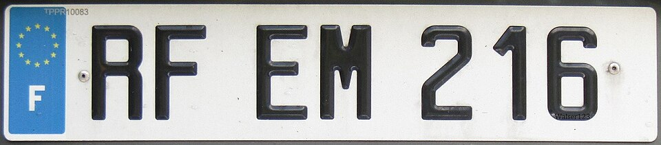
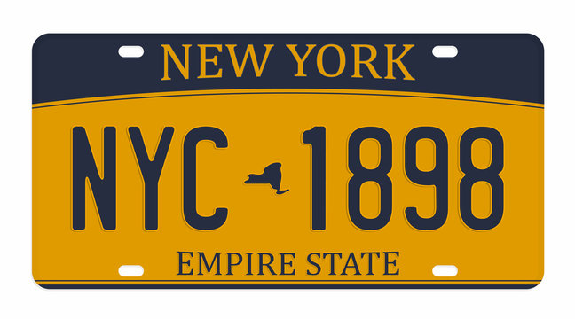

License Plates
License plates are a way that you can identify what country you are in. License plates can have different colors depending on the country. While most license plates in street view are blurred out, you can still make out enough details to eliminate certain possibilities.
Size
The first thing you want to notice about a license plate is its size. The main thing that the size of the license plate will tell is whether you are in Europe or not. European license plates are longer and narrower than other license plates.
Here is an example of a European license plate compared to a non-European license plate:


Here, you can see even when blurred, the different sizes and colors of the plates.
License Plate Colors
After you've confirmed you are in Europe, there are some countries you will be able to identify based on the colors. All European license plates have the blue stripe on the left side but only Italy has a second blue stripe on the right side. Portugal also has the right stripe but its color is yellow. If the main color of the license plate is yellow instead of white, you are either in the Netherlands, Luxembourg, or sometimes the UK. Another country you can see a yellow license plate that is not in Europe is Colombia. So if you see a lot of Spanish and yellow license plates, you are likely in Colombia.
Important Note
While license plates can be very useful for identifying the country you are in, you should always take into account that cars can be driven around so the license plate might not always correspond to the country the car is in. It is best to take look at multiple cars just in case you got unlucky and looked at a car from another country.